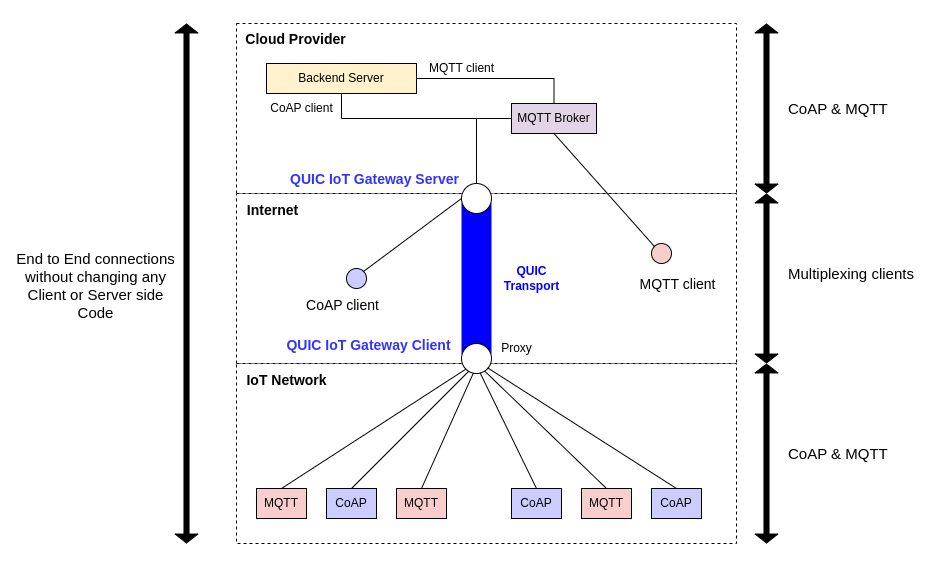
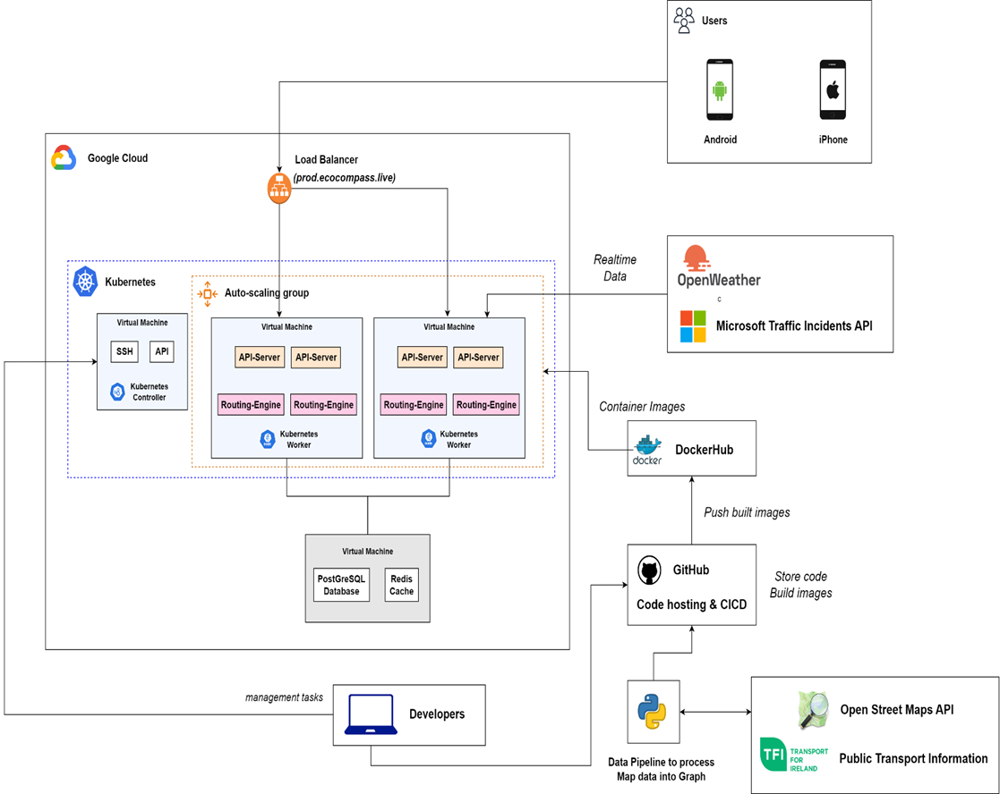
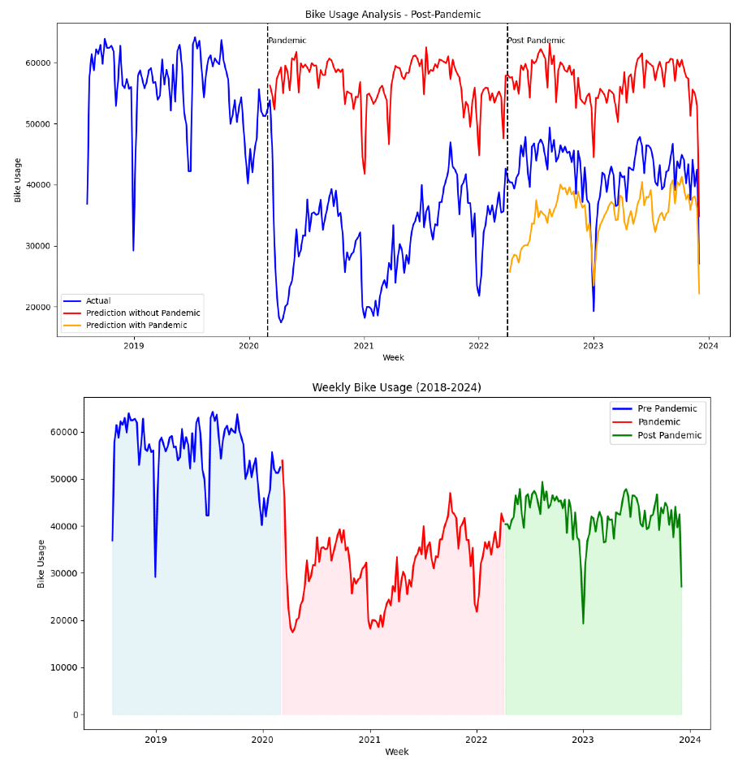
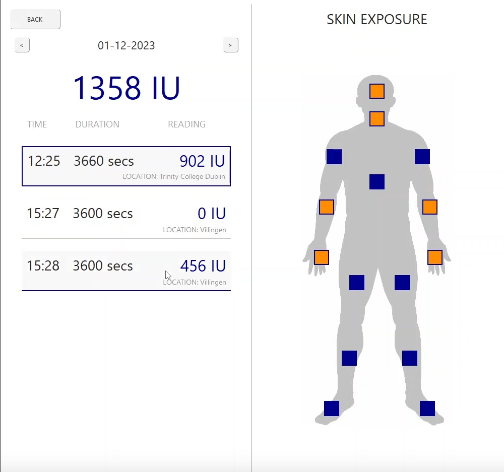

Anupal Mishra
Projects

Multi-protocol aggregation over QUIC for IoT Gateways
As part of my MSc Computer Science Dissertation research project, I explored the potential of leveraging QUIC transport protocol to improve data communication in IoT networks. I developed a Python-based IoT gateway that aggregates sensor data from multiple devices using CoAP and MQTT protocols over a single QUIC connection for enhanced performance. The project involved conducting experiments to demonstrate how QUIC can reduce round-trip time (RTT) and optimize the total bytes exchanged during data transmission. I built a Docker container-based lab to simulate real-world scenarios with live traffic, allowing for a comparative analysis between this QUIC-based system and a traditional TLS 1.3-based system. The results showed that QUIC offers significant performance improvements, especially in high network loss environments and with a larger number of connected clients, demonstrating its scalability and reliability for IoT communications.
Repo
Report

Dynamic Sustainable Wayfinding
As a team of 7 people working on Advanced Software Engineer project at Trinity College Dublin, we developed a robust city-scale routing engine designed for multi-modal navigation, seamlessly integrating multiple transportation modes, including bus, tram, car, and bike. Our goal was to provide users with highly efficient, real-time navigation options that adapt to dynamic factors such as traffic congestion, road accidents, and public transit schedules. The engine, built in Java, implements a custom-weighted A* algorithm to deliver routes that are 99% optimal by evaluating live data inputs and prioritizing speed, convenience, and safety.
To enable this, we processed extensive GTFS data to construct a multi-mode transit graph that represents Dublin and its surrounding counties. This allowed us to create a detailed map of the city's transit system, enabling users to switch seamlessly between transport modes within a single journey. The backend was deployed using Kubernetes on Google Cloud, ensuring scalability and reliability under various load conditions, while infrastructure automation was managed through Terraform to facilitate rapid updates and deployment.
In addition to backend development, we built a cross-platform mobile application that provided users with a streamlined navigation experience, offering real-time route updates and transit schedules. We also integrated gamification elements, such as setting personal goals and unlocking achievements, to boost user engagement and make the navigation process more interactive and rewarding. This holistic solution not only improves urban mobility but also encourages users to explore diverse transit options for their daily commutes.
Repo
Demo
Presentation

Dublin Bikes Pre/Post Pandemic
This project was my final submission for CS7CS4 - Machine Learning course at Trinity College Dublin. I was tasked to analyze the impact of pandemic on Dublin Bikes and how the usage changed during post-pandemic period.
The time-series dataset of Dublin city bike usage trends from 2018 to 2023 was preprocessed by merging multiple files, down-sampling data to match consistent intervals, and augmenting with weather and holiday information. A key feature, USAGE, was derived to represent bike inflows and outflows at stations. Two machine learning models, Lasso Regression and Random Forest, were implemented, with Random Forest outperforming Lasso in capturing both linear and non-linear relationships. The Random Forest model was used to assess bike usage patterns before, during, and after the COVID-19 pandemic, revealing significant declines during the pandemic and partial recovery in the post-pandemic period, although usage has not yet returned to pre-pandemic levels.
Repo

DSURE - VITAMIN-D Tracker
I developed this application to address the growing issue of Vitamin D deficiencies, particularly among those leading sedentary indoor lifestyles. The app leverages Holick’s Rule to estimate Vitamin D production by integrating UV-Index data, body surface area (BSA) exposed to sunlight, and the Minimal Erythema Dose (MED) based on skin type. Developed using PyQt6 with an MVC architecture, the application efficiently handles user inputs, including geographical location and skin type, to calculate and visualize Vitamin D levels. The MVC design ensures a clean separation between data management, user interface, and application logic, enhancing the app's maintainability and user experience.
Repo
Demo